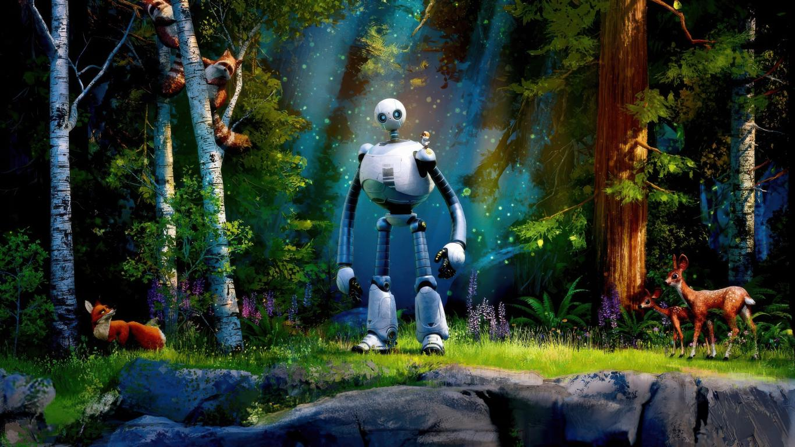
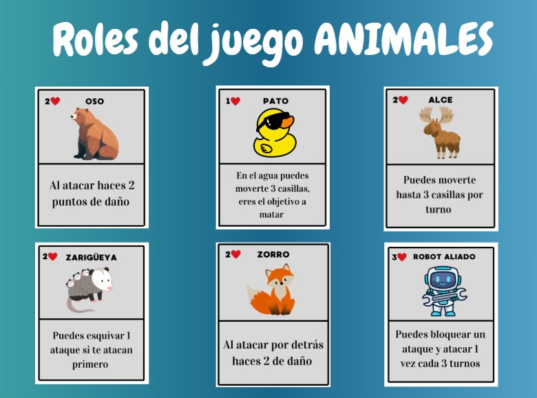
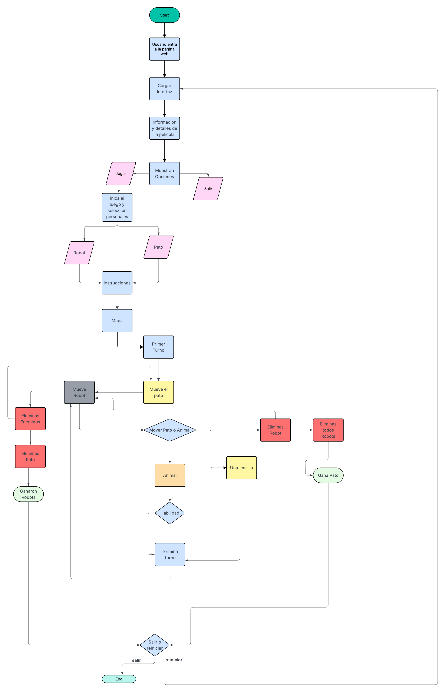

Bienvenido al proyecto
Bienvenido a Robot Salvaje: Salva el Pato, un proyecto escolar donde se tomó un juego de mesa original y se convirtió en una experiencia digital jugable desde el navegador. Aquí se mezclan historia, prototipos físicos y programación web en una sola página.

¿Cómo se juega?
En el tablero, los animales forman un equipo para proteger al pato mientras los robots intentan capturarlo antes de que se agoten los turnos. Cada personaje tiene habilidades especiales que cambian la estrategia en cada partida.
- Duración aproximada: 20–30 minutos
- Tablero basado en la isla donde vive Roz y los animales
- Escoge bando: equipo de Robots o equipo de Animales
- El Pato es el objetivo a proteger o capturar
Historia
Inspiración principal:
La historia nace de Robot Salvaje, donde Roz, una robot, naufraga en una isla llena de vida salvaje y aprende a comunicarse con los animales mientras protege a un patito huérfano.
La historia nace de Robot Salvaje, donde Roz, una robot, naufraga en una isla llena de vida salvaje y aprende a comunicarse con los animales mientras protege a un patito huérfano.

Roles del juego:
- Cada carta representa a un animal o robot con puntos de vida y habilidades distintas, como daño adicional, esquiva o bloqueo.
- Estas tarjetas físicas fueron el primer prototipo del sistema de personajes que ahora se ve en el tablero web.
Del cuento al tablero:
La relación de cuidado entre Roz y el pato se traduce en una condición de victoria: si el pato sobrevive los turnos, ganan los animales; si un robot llega hasta él, ganan los robots.
La relación de cuidado entre Roz y el pato se traduce en una condición de victoria: si el pato sobrevive los turnos, ganan los animales; si un robot llega hasta él, ganan los robots.
De la narrativa a la jugabilidad:
El diseño de roles, mapa y reglas busca mantener el mensaje de cooperación y supervivencia, pero ahora en forma de partidas competitivas y cooperativas en pantalla.
El diseño de roles, mapa y reglas busca mantener el mensaje de cooperación y supervivencia, pero ahora en forma de partidas competitivas y cooperativas en pantalla.
Acerca del Proyecto
Fase de idea y planificación:
Se partió de la historia de Robot Salvaje para imaginar un juego cooperativo en el que los animales protegen al pato mientras los robots avanzan desde los bordes del mapa.
Se partió de la historia de Robot Salvaje para imaginar un juego cooperativo en el que los animales protegen al pato mientras los robots avanzan desde los bordes del mapa.
Repositorio del proyecto:
El código fuente, imágenes y documentación se encuentran en el siguiente repositorio de GitHub: github.com/urli-gg/Patotective.
El código fuente, imágenes y documentación se encuentran en el siguiente repositorio de GitHub: github.com/urli-gg/Patotective.
Diagrama de flujo:
Antes de programar el juego web se elaboró un diagrama de flujo que resume el recorrido completo del jugador, desde que entra a la página hasta las condiciones de victoria y reinicio.
Antes de programar el juego web se elaboró un diagrama de flujo que resume el recorrido completo del jugador, desde que entra a la página hasta las condiciones de victoria y reinicio.

Prototipado y diseño:
Se trabajó con prototipos de tablero, cartas de rol e imágenes de referencia para definir colores, personajes y el aspecto general de la interfaz web.
Se trabajó con prototipos de tablero, cartas de rol e imágenes de referencia para definir colores, personajes y el aspecto general de la interfaz web.
Desarrollo digital e IA:
Durante el desarrollo se utilizaron asistentes de programación, pruebas iterativas y ajustes en las reglas para que el tablero digital fuera jugable y entendible para nuevos jugadores.
Durante el desarrollo se utilizaron asistentes de programación, pruebas iterativas y ajustes en las reglas para que el tablero digital fuera jugable y entendible para nuevos jugadores.
Integración web y presentación:
El sitio reúne historia, reglas, tablero jugable y galería en una sola página responsiva, pensada para mostrar el proyecto en clase o compartirlo en línea.
El sitio reúne historia, reglas, tablero jugable y galería en una sola página responsiva, pensada para mostrar el proyecto en clase o compartirlo en línea.
Trabajo en equipo:
El proyecto se realizó en equipo, combinando documentación, diseño, programación, pruebas de usabilidad y mejoras creativas a partir del prototipo inicial de juego de mesa.
El proyecto se realizó en equipo, combinando documentación, diseño, programación, pruebas de usabilidad y mejoras creativas a partir del prototipo inicial de juego de mesa.
Integrantes y actividades principales:
- Jesús Gael Saucedo Solorzano: gestión del proyecto, programación, pruebas.
- Diego Hernandez: diseño de prototipos, reglas y experiencia de usuario.
- Aslan Yacid: diseño visual, estructura del sitio y documentación.
Logros:
Se logró adaptar un juego de mesa cooperativo a un tablero web con varios robots enemigos, roles diferenciados y una presentación visual pensada para que cualquier visitante entienda la historia y pueda jugar una partida rápida.
Se logró adaptar un juego de mesa cooperativo a un tablero web con varios robots enemigos, roles diferenciados y una presentación visual pensada para que cualquier visitante entienda la historia y pueda jugar una partida rápida.